פשוט להצליח במתמטיקה › כל הנושאים › קו ישר ושיפוע
קו ישר ושיפוע – סרטוני הסבר ותרגול
42 סרטוני הסבר ותרגול בנושא קו ישר ושיפוע – לכיתה ח׳, כיתה ט׳, שאלון 372. כל נושא מוסבר מהקל אל הקשה: קודם הרעיון, אחר כך תרגילים, ובסוף שאלות בסגנון בגרות. הכול בחינם, בשיטת "פשוט להצליח".
רוצים לעקוב אחרי ההתקדמות?נרשמים בחינם, וכל סרטון שראיתם מסומן ✓. ממשיכים מכל מכשיר.
הצטרפות בחינם ←קו ישר ושיפוע – כיתה ח׳ כל הנושאים של כיתה ח׳ ←
פונקציה קווית – שיפוע אחיד, דוגמאותהגדרה של פונקציה כיתה ח – התחלה של ההתחלה קו ישר – שיפוע ומשוואת ישר משתי נקודות
קו ישר – שיפוע ומשוואת ישר משתי נקודות הסבר על קו ישר ועל שיפועים כיתה ח האלופים והמטורפים
הסבר על קו ישר ועל שיפועים כיתה ח האלופים והמטורפים קו ישר כולל שיפוע ותרגילים והסברים על מהות השיפוע ועל מהות ה-b כיתה ח 4
קו ישר כולל שיפוע ותרגילים והסברים על מהות השיפוע ועל מהות ה-b כיתה ח 4 קו ישר כולל שיפוע ותרגילים והסברים על מהות השיפוע ועל מהות ה-b כיתה ח 3
קו ישר כולל שיפוע ותרגילים והסברים על מהות השיפוע ועל מהות ה-b כיתה ח 3 איך מוצאים שיפוע כיתה ח
איך מוצאים שיפוע כיתה ח הסבר משוואות ישר כיתה ח 3
הסבר משוואות ישר כיתה ח 3 קו ישר – איך מוציאים את השיפוע ואת החיתוך עם ציר y לפי ציור כיתה ח
קו ישר – איך מוציאים את השיפוע ואת החיתוך עם ציר y לפי ציור כיתה ח קו ישר – תרגילים פתורים כיתה ח
קו ישר – תרגילים פתורים כיתה ח קו ישר – תרגילים פתורים כיתה ח (2)
קו ישר – תרגילים פתורים כיתה ח (2) משמעות של משוואת קו ישר – מה אומר השיפוע ומה אומר ה-b כיתה ח
משמעות של משוואת קו ישר – מה אומר השיפוע ומה אומר ה-b כיתה ח משוואת קו ישר – משמעות והסבר נדיר כיתה ח
משוואת קו ישר – משמעות והסבר נדיר כיתה ח שיפועים קו ישר – להבדיל ולהבחין כיתה ח
שיפועים קו ישר – להבדיל ולהבחין כיתה ח הסבר שיפועים כיתה ח 1
הסבר שיפועים כיתה ח 1 גרף פונקציה – הבנה בין x ל-y כיתה ח
גרף פונקציה – הבנה בין x ל-y כיתה ח משוואת קו ישר – להציב ולגלות את x ו-y, שיפוע וחיתוך עם ציר y כיתה חהסבר קשר בין 2 משתנים כיתה ח
משוואת קו ישר – להציב ולגלות את x ו-y, שיפוע וחיתוך עם ציר y כיתה חהסבר קשר בין 2 משתנים כיתה ח קו ישר התחלה כיתה ח – תרגילים כולל גרף
קו ישר התחלה כיתה ח – תרגילים כולל גרף כיתה ח קשר בין 2 משתנים – תחילת משוואת קו ישר
כיתה ח קשר בין 2 משתנים – תחילת משוואת קו ישר משוואת ישר כיתה ח – ליצור משוואת ישר ונקודות חיתוך בין ישרים
משוואת ישר כיתה ח – ליצור משוואת ישר ונקודות חיתוך בין ישרים משוואת ישר כיתה ח – ליצור משוואת ישר ונקודות חיתוך בין ישרים 2
משוואת ישר כיתה ח – ליצור משוואת ישר ונקודות חיתוך בין ישרים 2 משוואת קו ישר כיתה ח עם שטחים ושיפועים
משוואת קו ישר כיתה ח עם שטחים ושיפועים משוואת קו ישר – חיתוך עם הצירים, בין ישרים ושטחים כיתה ח 1
משוואת קו ישר – חיתוך עם הצירים, בין ישרים ושטחים כיתה ח 1 משוואת קו ישר – חיתוך עם הצירים, בין ישרים ושטחים כיתה ח 4משוואת קו ישר – חיתוך עם הצירים, בין ישרים ושטחים כיתה ח 2
משוואת קו ישר – חיתוך עם הצירים, בין ישרים ושטחים כיתה ח 4משוואת קו ישר – חיתוך עם הצירים, בין ישרים ושטחים כיתה ח 2
קו ישר – שיפוע ומשוואת ישר משתי נקודות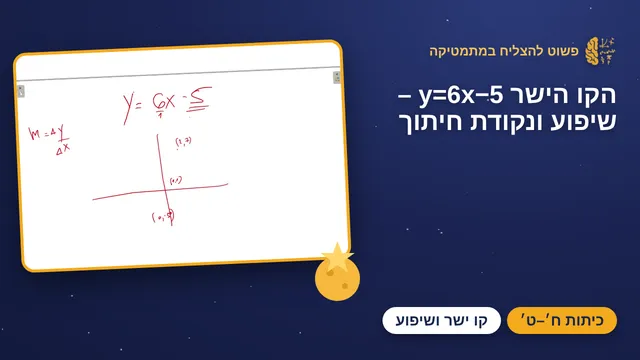
הקו הישר y=6x−5 – שיפוע ונקודת חיתוךהסבר על קו ישר ועל שיפועים כיתה ח האלופים והמטורפים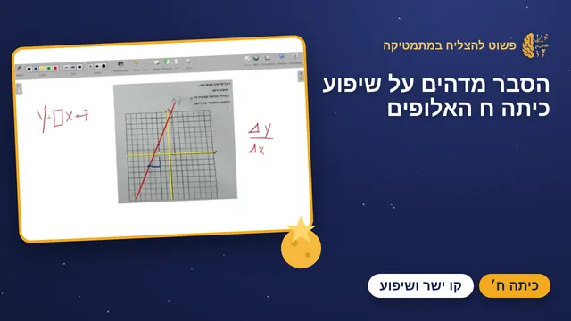
הסבר מדהים על שיפוע כיתה ח האלופים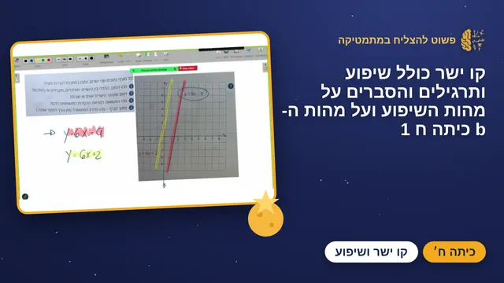
קו ישר כולל שיפוע ותרגילים והסברים על מהות השיפוע ועל מהות ה-b כיתה ח 1קו ישר כולל שיפוע ותרגילים והסברים על מהות השיפוע ועל מהות ה-b כיתה ח 4קו ישר כולל שיפוע ותרגילים והסברים על מהות השיפוע ועל מהות ה-b כיתה ח 3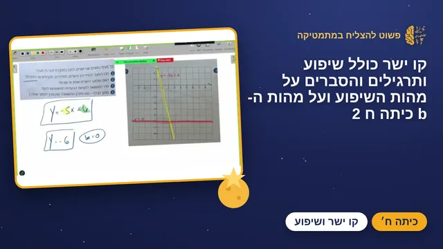
קו ישר כולל שיפוע ותרגילים והסברים על מהות השיפוע ועל מהות ה-b כיתה ח 2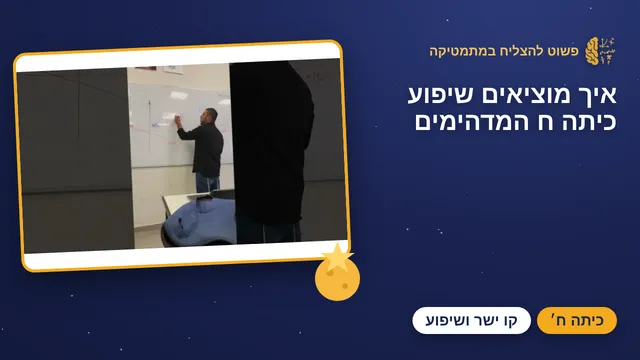
איך מוציאים שיפוע כיתה ח המדהימיםאיך מוצאים שיפוע כיתה ח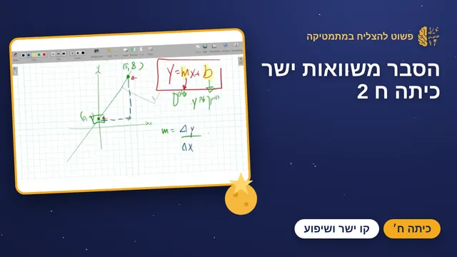
הסבר משוואות ישר כיתה ח 2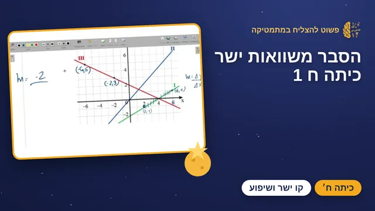
הסבר משוואות ישר כיתה ח 1הסבר משוואות ישר כיתה ח 3קו ישר – איך מוציאים את השיפוע ואת החיתוך עם ציר y לפי ציור כיתה ח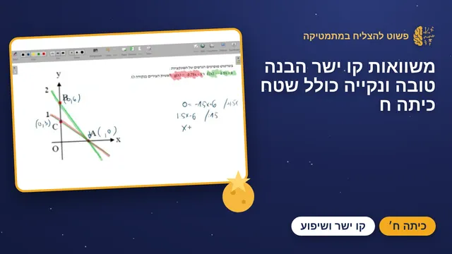
משוואות קו ישר הבנה טובה ונקייה כולל שטח כיתה חקו ישר – תרגילים פתורים כיתה חקו ישר – תרגילים פתורים כיתה ח (2)משמעות של משוואת קו ישר – מה אומר השיפוע ומה אומר ה-b כיתה חמשוואת קו ישר – משמעות והסבר נדיר כיתה ח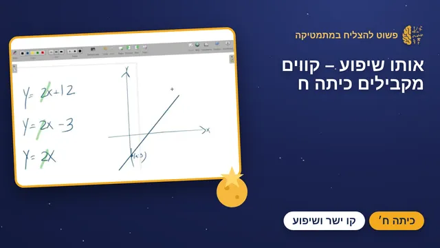
אותו שיפוע – קווים מקבילים כיתה חשיפועים קו ישר – להבדיל ולהבחין כיתה חהסבר שיפועים כיתה ח 1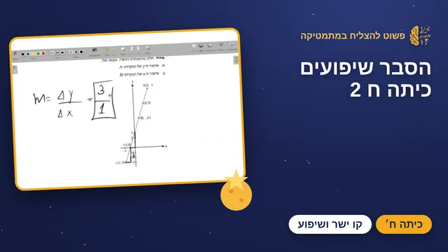
הסבר שיפועים כיתה ח 2גרף פונקציה – הבנה בין x ל-y כיתה חמשוואת קו ישר – להציב ולגלות את x ו-y, שיפוע וחיתוך עם ציר y כיתה חהסבר קשר בין 2 משתנים כיתה חקו ישר התחלה כיתה ח – תרגילים כולל גרףכיתה ח קשר בין 2 משתנים – תחילת משוואת קו ישרמשוואת ישר כיתה ח – ליצור משוואת ישר ונקודות חיתוך בין ישרים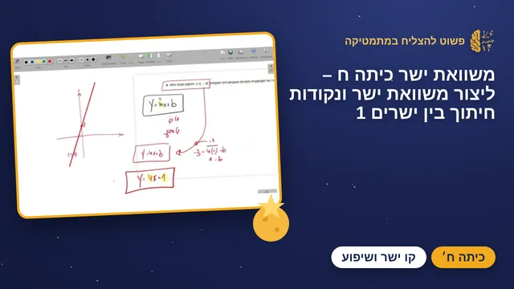
משוואת ישר כיתה ח – ליצור משוואת ישר ונקודות חיתוך בין ישרים 1משוואת ישר כיתה ח – ליצור משוואת ישר ונקודות חיתוך בין ישרים 2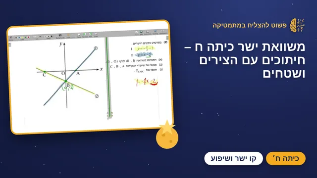
משוואת ישר כיתה ח – חיתוכים עם הצירים ושטחיםמשוואת קו ישר עם שיפועים ושטחים כיתה חמשוואת קו ישר כיתה ח עם שטחים ושיפועיםמשוואת קו ישר – חיתוך עם הצירים, בין ישרים ושטחים כיתה ח 1משוואת קו ישר – חיתוך עם הצירים, בין ישרים ושטחים כיתה ח 4משוואת קו ישר – חיתוך עם הצירים, בין ישרים ושטחים כיתה ח 2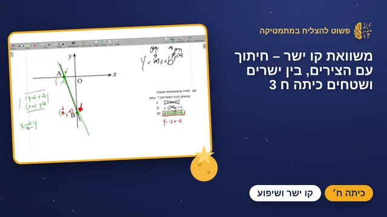
משוואת קו ישר – חיתוך עם הצירים, בין ישרים ושטחים כיתה ח 3המהות של שיפוע · סרטון קצר